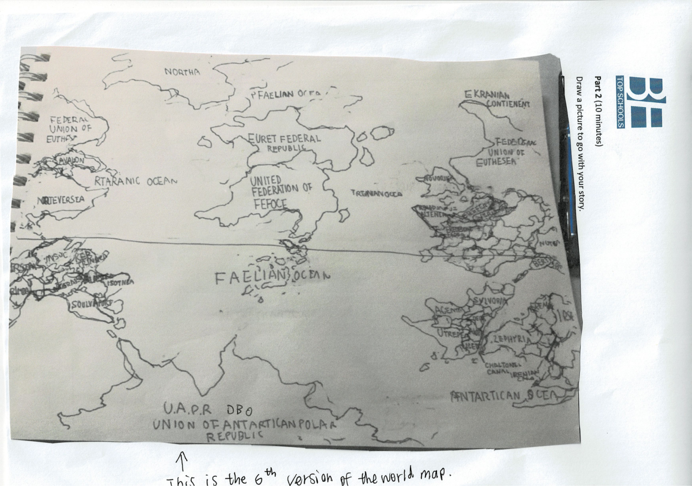
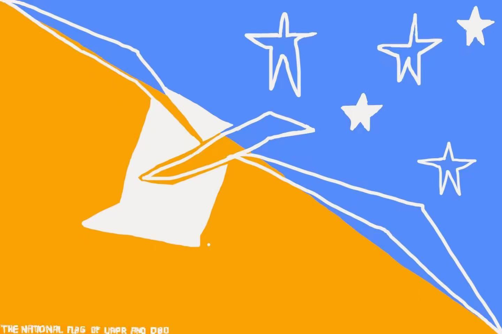
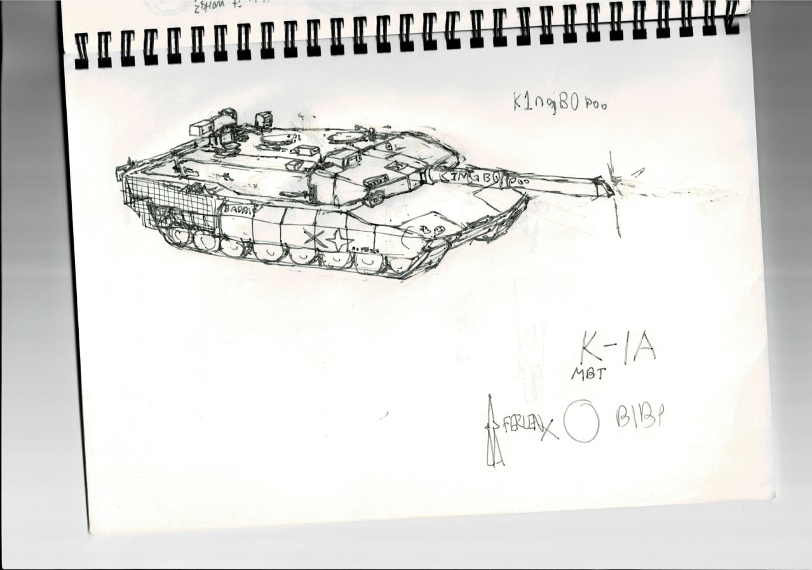
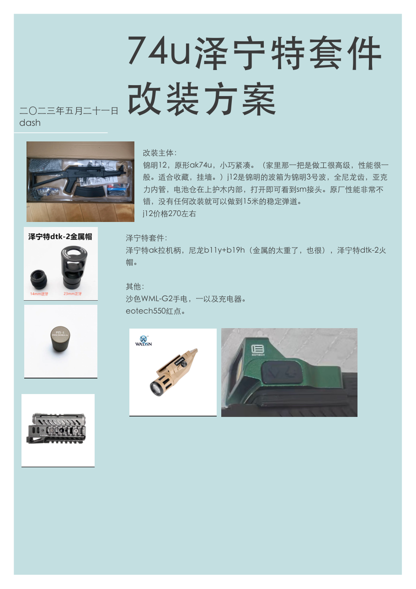
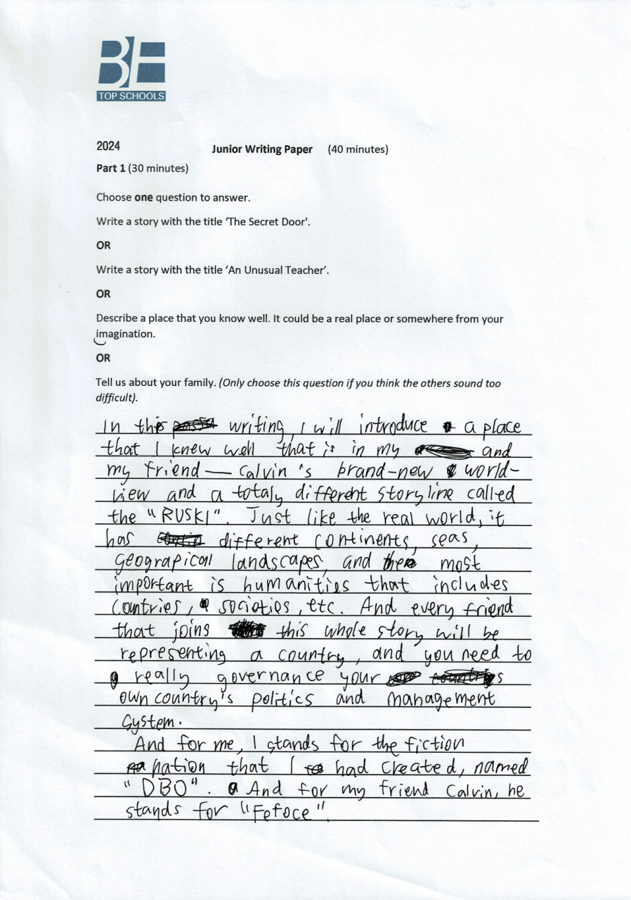
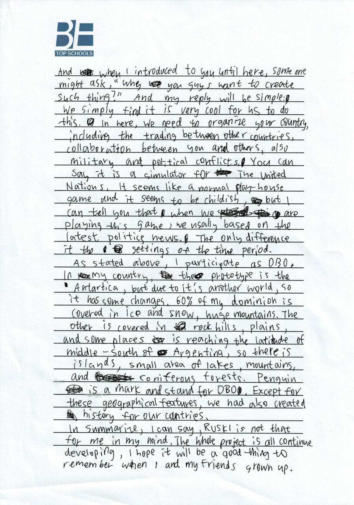
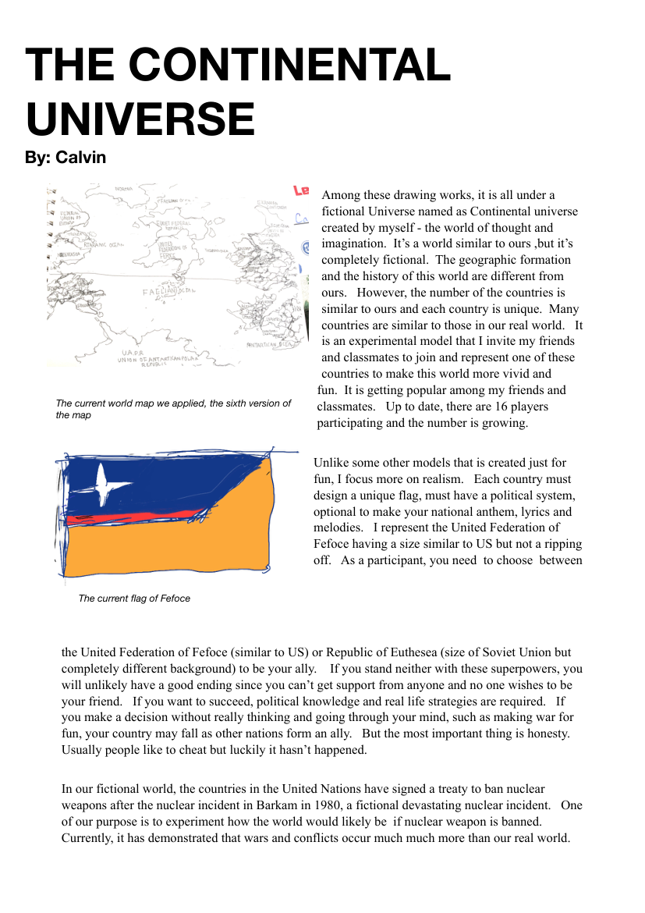
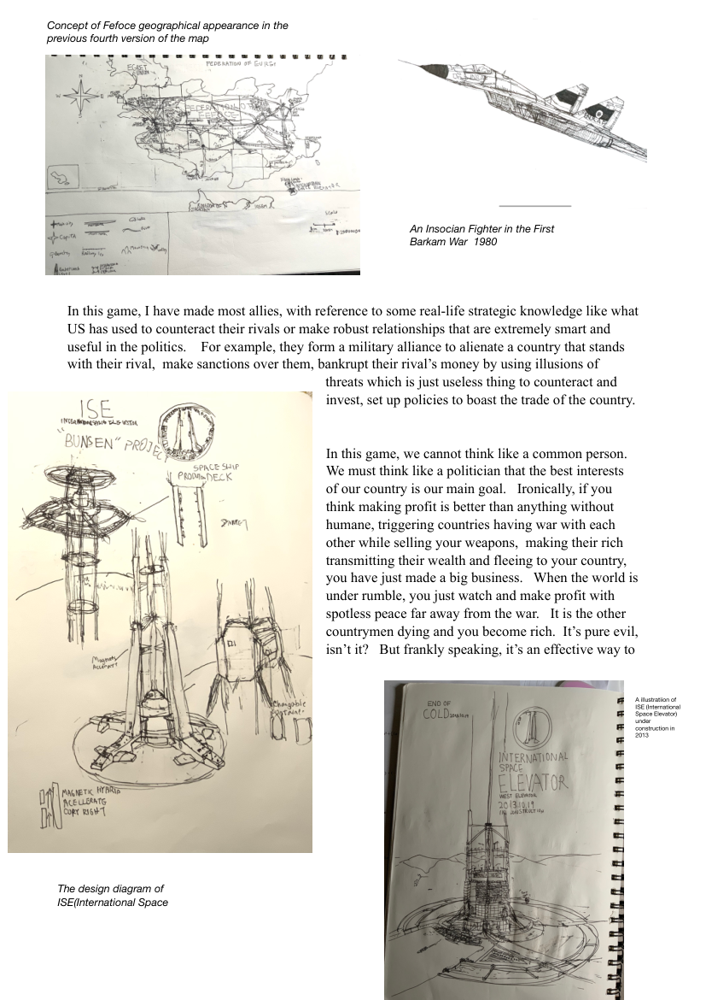
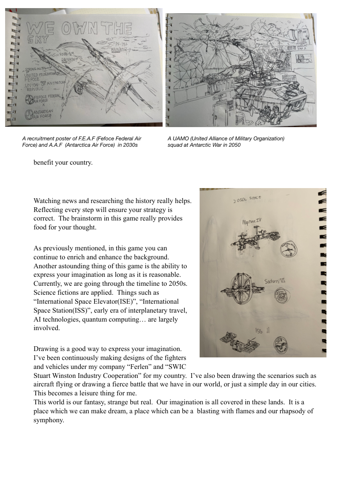

一个从课桌与草稿纸上生长出来的世界。四位少年，四年笔耕，数万字手稿， 手绘六大大陆、三大洋与一个没有核武器的平行星球 —— 现在，它向所有玩家敞开大门。
RUSKI 不只是一份科幻设定，它是一台「联合国模拟器」：每位玩家代表一个虚构国家， 治理它的政治与管理体系，在贸易、结盟、冲突与历史事件中，亲手书写一颗星球的命运。
玩家为自己的国家设计国旗、政体，甚至创作国歌——不只是角色扮演，而是完整的国家经营。
剧情以最新国际政治新闻为蓝本，但发生在架空时间线——用真实战略知识，推演另一个世界的走向。
手绘地图、坦克设定图、装备改装方案、平行宇宙设定集、旗帜与周边——文学×美术×工程设计的跨学科宇宙。
世界地图已迭代六个版本。新玩家加入即扩展版图——RUSKI 是一个由参与者共同喂养、持续生长的活世界。
在 RUSKI 编年史中，1980 年 Barkam 核事件促使各国签署全面禁核条约。少年们随后观察到一个反直觉的结果： 无核世界的战争与冲突频率，远高于现实世界 —— 以自己的方式验证了「核威慑悖论」。 这个发现被完整记录在创始档案《The Continental Universe》中，成为 RUSKI 世界观最深的一层思想内核。
2022 年至今，RUSKI 走过创世、军备、体系化、沉淀、上线五个纪元。以下时间线基于创始档案与手稿整理。
Dash 与 Calvin、Jacky、Edison 三位同伴共同创立 RUSKI。Dash 执笔世界观主设定， 代表国为 BBO（南极极地共和国联邦 U.A.P.R.，原型南极洲，图腾企鹅）；Calvin 代表 Fofce。 一个基于真实政治、发生在平行星球的国家模拟游戏，就此开局。
K‑1A 主战坦克设定图成型：苏系血统、倾斜装甲、反应装甲布局，一页页手绘推敲。 同年 5 月 21 日完成《泽宁特改装方案》—— 从波箱、火帽到红点瞄具的完整装备研究档案， 让 RUSKI 的军事线同时具备想象力与工程写实。
世界地图迭代至第 6 版：六大大陆、三大洋、十余国疆域全部定稿。 Calvin 发布平行宇宙官方设定集 《The Continental Universe》：16 名玩家、两大超级大国、 1980 禁核条约与 2013 国际太空电梯。BBO 国旗定稿，T 恤周边设计并量产。
累计 5 大本手绘作品与故事（数万字）装订成档。创始人随留学足迹分处中英两地， RUSKI 进入跨时区运转：课间与深夜的聊天窗口里，世界的另一场危机正在发生。
项目从课桌走向互联网：本网站上线，世界档案数字化，向全球玩家开放建交与共建。 目标只有一个 —— 让这个由少年创造的世界，开始自己生长。
以下均为创始手稿原件扫描。点击任意档案可放大查看 —— 四年创作的每一道笔迹，都值得被世界看见。









| 产出类别 | 规模 / 描述 | 状态 | 载体 |
|---|---|---|---|
| 手绘作品与故事 | 5 大本 · 数万字世界观文本 | 已完成 | 纸质档案 · 数字化进行中 |
| 世界地图 | 六大大陆 · 三大洋 · 迭代 6 版 | 第 6 版定稿 | 手绘原稿（见档案 No.01） |
| 品牌视觉系统 | BBO 国旗 · RUSKI 标识与旗帜 | 已完成 | 手绘 + 数字稿（见档案 No.02） |
| 周边产品 | T 恤设计与生产 | 已量产 | 实体周边 |
| 军事科技档案 | K‑1A 坦克设定 · 泽宁特改装方案 | 已完成 | 手绘 + 研究文档 |
| 平行宇宙设定集 | 《The Continental Universe》10 页全档 | 已完成 | 手绘扫描（见档案 No.07–09） |
| RUSKI 线上平台 | 本网站 · 世界档案库 · 玩家共建入口 | 进行中 · v1 上线 | Web |
| 玩家国家注册系统 | 全球玩家建交 · 版图扩展提案 | 规划中 · 见路线图 | Web · 2027 |
示意图依据创始手稿第 6 版世界地图重绘。创始国已亮起金边，未认领的大陆正在等待新的国家元首 —— 也许就是你。
| 国家 / 大陆 | 英文注册名 | 归属 | 备注 | 状态 |
|---|---|---|---|---|
| BBO 极地共和国联邦 | U.A.P.R. · Union of Antartican Polar Republic | Dash（创始人） | 南极原型 · 企鹅图腾 · 60% 冰原 | 创始国 · 活跃 |
| 费福斯联邦 | United Federation of Fefoce | Calvin（创始人） | 超级大国 · 体量对标美国 · 盟约网络 | 创始国 · 活跃 |
| 尤塞亚共和国 | Republic of Euthesea | 东方阵营 | 超级大国 · 体量对标苏联 | 阵营核心 |
| 埃克拉宁大陆 | Ekranin Continent | — | 东北方大陆 | 开放认领 |
| 特雷加努卡 | Tregannoocca | — | 北方大陆 | 开放认领 |
| 萨尔沃里亚 | Salvoria | — | 东方多行政区大陆 | 开放认领 |
| 伦塔 | Lehnta | — | 东方次大陆 | 开放认领 |
| 诺西亚 | Northia | — | 极西北大陆 | 开放认领 |
| 尤雷特联邦共和国 | Euret Federal Republic | — | 西方大陆 | 开放认领 |
| 阿登 | Arden | — | 东南大陆 | 开放认领 |
| 梅迪耶西亚 | Mediyesia | — | 南方群岛大陆 | 开放认领 |
| 你的国家？ | Your Nation — To Be Registered | 未来的你 | 认领现存大陆，或提案新增版图（地图将随版本扩展） | 等待元首 |
RUSKI 的世界因参与者而生长。无论你想治国、画装备、写编年史还是纵横外交 —— 这里都有你的位置。
在国家图鉴中认领一块现存大陆，或向创始议会提案新增版图 —— 世界地图已迭代六版，每一版都欢迎新的疆域。
TERRITORY CLAIM创作原创国旗（下方「国旗设计台」可直接出图）、确定政体与国策，国歌可选 —— 这是你的国家，由你定义。
NATION IDENTITY承认诚实原则与推演规则：像政治家一样思考，不搞无脑战争 —— 在 RUSKI，鲁莽的开战者会被联军覆灭。
THE CHARTER贸易、结盟、谈判、军备设计、历史事件推演……你的每一个决定都会写进世界编年史。
PLAY & BUILD| 角色 | 职责 | 适合谁 | 产出物 |
|---|---|---|---|
| 国家元首Head of State | 治理国家、制定国策、参与外交与战争推演 | 热爱地缘政治与国际新闻的玩家 | 国策文件 · 外交记录 |
| 军备设计师Weapons Designer | 为宇宙设计原创装备：坦克、战机、载具设定图 | 军事迷 · 美术与工程设计爱好者 | 装备设定图（如 K‑1A） |
| 外交官Diplomat | 结盟谈判、条约起草、危机斡旋 | 善辩与共情的沟通者 | 条约 · 联盟公告 |
| 史官Chronicler | 记录每一轮推演，编纂世界编年史 | 写作者 · 世界观设定控 | 编年史 · 设定集 |
这些不是写在墙上的口号，而是四位创始人在四年推演中亲手验证过的游戏哲学。加入 RUSKI，即意味着认同它们。
作弊是对所有玩家想象力的背叛。创始档案明确记载：幸运的是，四年以来从未发生。—— 我们希望永远如此。
国家利益是最高目标，但绝不是无脑开战 —— 在 RUSKI 的历史里，为好玩而贸然开战的国家，都被联军送进了历史书。
每个玩家都是一颗行星。世界不属于任何单一作者 —— 它由所有参与者的决定共同喂养、共同生长。
以最新政治新闻与真实战略知识为蓝本，在架空时间线中推演另一种可能 —— 理解现实世界，是玩好 RUSKI 的必修课。
Dash 在手稿结尾写道：希望 RUSKI 持续发展下去，成为我们长大后共同的美好回忆。—— 这就是这个宇宙存在的初心。
世界地图已迭代 6 版。任何玩家都可向创始议会提案扩展版图、新增设定 —— 通过即并入正史，世界随社区生长。
定期发起历史事件推演（战争、危机、科技突破），全体玩家参与决策，结果由史官写入编年史，不可回滚。
Dash · Calvin · Jacky · Edison 四位创始人组成议会，负责世界观守门、争议裁决与新玩家建交 —— 议会也由社区监督。
线上化只是起点。RUSKI 的终极目标，是成为一个由社区自主运转、跨越少年时代的平行世界。
| 阶段 | 里程碑 | 说明 | 状态 |
|---|---|---|---|
| 2026 | 官网 v1 上线 · 世界档案库 | 本网站：世界观、发展历史、档案库、国家图鉴与共建入口全部上线 | 进行中 · 你正在看它 |
| 2026 | 手稿全面数字化 | 5 大本手绘档案高精度扫描归档，陆续公开 | 进行中 |
| 2027 | 玩家国家注册系统 | 全球玩家在线建交：注册国家、上传国旗、认领版图 | 规划中 |
| 2027 | 交互式世界地图 v7 | 可缩放、可编辑的在线地图，玩家版图实时更新 | 规划中 |
| 2028 | 多人事件推演平台 + 编年史年刊 | 线上推演引擎与年度出版计划 | 远期 |
| ∞ | 一个自主生长的世界 | 当创始人们长大，RUSKI 仍在生长 —— 由一代代玩家接力 | 我们的梦想 |